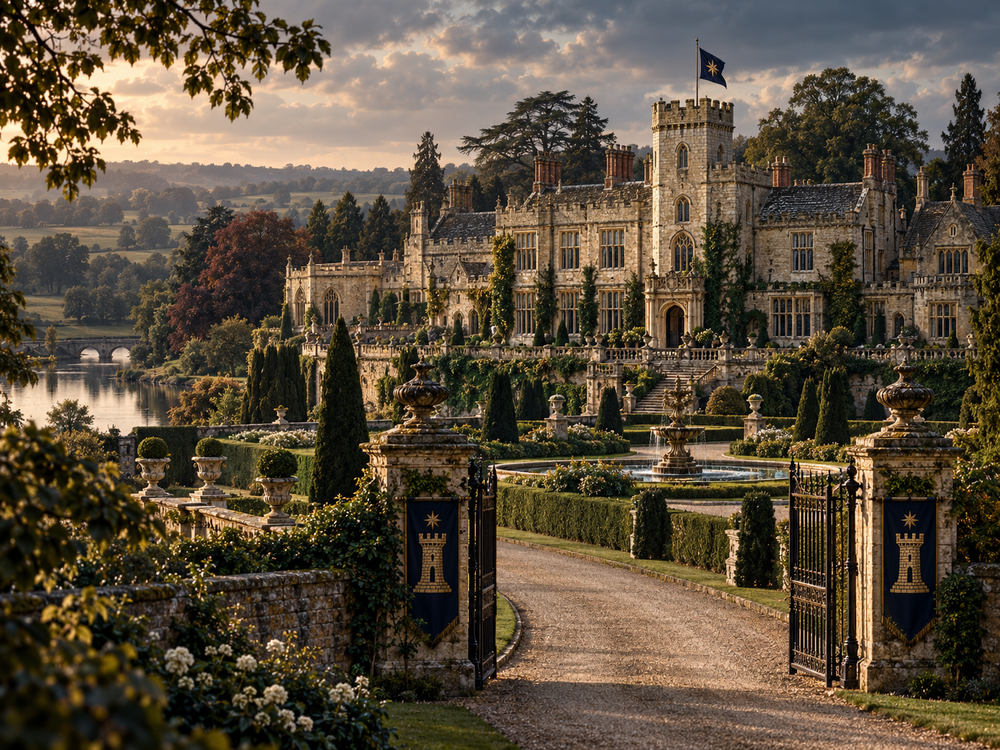

Old Great House • British Core
House Wycliffe
One of the oldest and most institutionally durable Great Houses, Wycliffe built its power by surviving governments rather than becoming one. Its influence rests on finance, intelligence, administration, law, universities, patronage, and relationships designed to outlast individual generations.
“Institutions outlive individuals.”
House Wycliffe • full heraldic achievement
StatusRecognized Great House
CoreBritain
Institutional CenterLondon
Ancestral SeatRural England • exact estate pending
2026 Council StatusTo be assigned after peer review

01
House Identity
Core principle
Wycliffe’s defining instinct is institutional continuity. The House prefers durable placement, procedural influence, trusted networks, and multigenerational relationships over highly visible displays of personal power.
Where Ravenscroft often asks how to adapt to what comes next, Wycliffe more often asks which institution will still matter fifty years from now and how to remain essential within it.
Character of power
Wycliffe power is deep before it is broad: banking relationships, intelligence liaisons, legal institutions, universities, civil administration, charitable trusts, diplomatic networks, elite education, and professional patronage that may survive for generations.
Its public institutions are real. Hidden influence works through continuity and access rather than theatrical command.
02
Great-House Qualification
Stress test: clear pass03
Historical Development
The recognizable House emerges in medieval England, probably during the twelfth or thirteenth century. Exact foundation date remains open pending the final early-Compact chronology.
Wycliffe is already a major independent House in the oldest constitutional period. Whether it is literally an original signatory or one of the earliest accessions remains intentionally open until the First Compact’s signatories are finalized.
The House increasingly favors administration, law, finance, information, and institutional access over dependence on crown favor. A core lesson develops: dynasties and governments change; durable institutions survive.
Wycliffe influence expands with British commerce and empire. The House develops deep relationships around banking, shipping, civil administration, diplomacy, intelligence, universities, law, and the East India Company without literally controlling the British state.
Wycliffe quietly supports the future Ravenscroft break from Falkenrath, expecting the new American House to weaken Falkenrath and remain within Wycliffe’s orbit. Ravenscroft instead becomes genuinely independent of both.
At the height of British imperial power, Wycliffe is plausibly the most influential Great House of its era, with deep networks throughout Britain and the wider imperial/Commonwealth system.
Two world wars badly damage the European environment in which Wycliffe had flourished. The House survives but the foundations of imperial primacy are permanently altered.
Rather than attempting to preserve a collapsing imperial model, Wycliffe shifts toward finance, intelligence, law, international institutions, universities, corporate networks, media, diplomacy, philanthropy, and durable Commonwealth relationships.
Wycliffe alternately competes and cooperates with the rapidly rising Ravenscroft. Pragmatic factions recognize that partnership with the ascendant American House can preserve Wycliffe influence better than an unwinnable struggle for old primacy.
Wycliffe remains one of the oldest, safest, and hardest Great Houses to dislodge. It is no longer the singular center of global hidden power, but its institutional depth makes it extraordinarily resilient.

04
Geography & Influence
British core
Britain is unquestionably Wycliffe’s core sphere. Its ancestral seat remains in rural England, while London functions as the House’s institutional capital through finance, law, intelligence, government-adjacent networks, academia, philanthropy, and diplomacy.
Commonwealth legacy
Historic Wycliffe networks remain especially important in Canada, Australia, New Zealand, South Asia, parts of Africa, and the Caribbean. These are spheres of influence rather than sovereign territory and overlap heavily with local Houses and other Great Houses.
Canada
Atlantic Canada retains particularly strong Wycliffe influence. Quebec contains deep historic networks but remains contested. Ontario is a major Wycliffe–Ravenscroft overlap zone, while western Canada has become substantially more Ravenscroft-oriented. The map therefore distinguishes core, deep influence, overlap, contested regions, and legacy networks rather than treating modern states as House possessions.

05
Institutional Power
Finance & BankingOld capital, private relationships, trusts, institutional finance, and multigenerational commercial networks.
IntelligenceCollection, liaison, counterintelligence, archival continuity, discreet analysis, and long-memory networks.
Law & AdministrationLegal institutions, civil administration, regulatory knowledge, governance, and procedural influence.
Universities & EducationAcademic placement, elite education, fellowships, professional formation, and long-lived institutional relationships.
DiplomacyBack channels, negotiated settlements, relationship maintenance, and discreet conflict de-escalation.
Philanthropy & CultureTrusts, foundations, museums, charities, and institutions whose usefulness persists across political eras.

06
The Order & the Long Peace
Wycliffe is one of the strongest supporters of the constitutional principle behind the Long Peace. That does not make the House pacifist. It makes it highly aware that sustained Great-House warfare destroys exactly the institutions on which its strength depends.
Wycliffe therefore excels at mediation, quiet settlements, marriage diplomacy, intelligence-sharing arrangements, face-saving compromises, and back-channel negotiation. It is also perfectly capable of proxy pressure and covert competition below the threshold of prohibited Great-House war.
07
Inter-House Relations
Ravenscroft
Centuries of rivalry, cooperation, alliance, marriage, mutual dependence, resentment, and genuine personal friendship. Wycliffe helped the future Ravenscroft break from Falkenrath and later watched the younger House surpass it in aggregate global influence.
Alliance logic
Wycliffe treats marriage and institutional partnership as long-term political infrastructure. Cross-House ties are valuable precisely because they make escalation materially and personally harder.
08
Governance & Representation
The current Head of House Wycliffe, its standing Conclave Delegate, Alternate Delegate, Council status, Councilor, and Deputy Councilor remain intentionally unassigned until those characters and family branches are developed.
As with every Great House, the House Head owns Wycliffe’s Conclave Voice and may exercise it personally or accredit a qualified delegate. If Wycliffe holds one of the Nine, the House selects its Councilor according to Wycliffe’s own internal law.
09
Strengths & Vulnerabilities
Primary strength — continuity
Wycliffe is extremely difficult to uproot because its power is distributed through institutions and relationships that survive governments, companies, individual officeholders, and changes in public political order.
Primary risk — institutional inertia
The instinct to stabilize can become resistance to necessary change. Historically Wycliffe has sometimes underestimated transformations whose permanence became obvious only after the House’s preferred institutional order had already shifted.
10
Visual Canon
House-level visual set establishedHeraldryFull House Wycliffe heraldic achievement established and used only at House level or where full heraldry is contextually appropriate.
Principal SeatAncestral rural-English estate exterior established visually; exact estate name and county remain open.
InfluenceWorld influence-map treatment established with Britain as core and separate categories for deep influence, contested overlap, and legacy networks.
Historical IdentityPostwar strategy meeting established as the defining historical visual for Wycliffe's transition from imperial-era reach to modern institutional power.
Modern PowerLondon institutional-office image established as the contemporary expression of Wycliffe's finance, legal, diplomatic, and intelligence networks.
Leadership PortraitsCurrent Head, Conclave Delegate, Councilor, and other leadership portraits remain pending until those characters are developed.
11
Canon Control
LockedBritish core; institutional philosophy; finance/intelligence/administrative strength; imperial/Commonwealth history; support for Ravenscroft’s Revolutionary break; post-imperial pivot; Long Peace posture; Great-House qualification; full heraldic crest; ancestral-seat visual; influence map; postwar historical scene; London institutional image.
OpenExact medieval foundation date; exact ancestral estate name/location; whether Wycliffe is an original First Compact signatory or an earliest accession; current Head and constitutional representatives; leadership portraits.